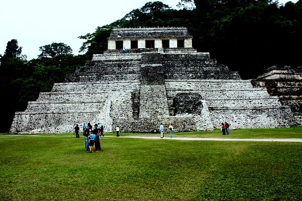
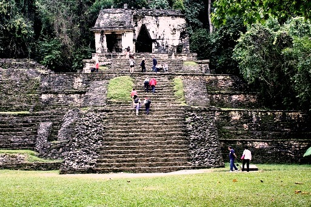
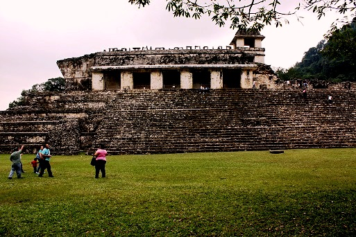
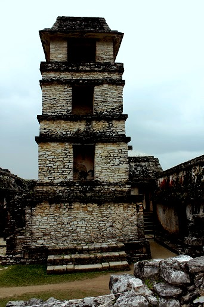
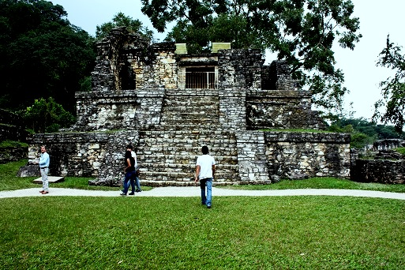
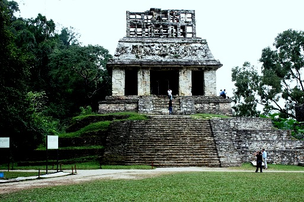

Es una de las ciudades arqueológicas más interesantes de México, conocerla es descubrir el alma del mundo Maya; es entender mitos, rituales, creencias y admirar la arquitectura majestuosa de nuestros antepasados. Ciudad fundada en 1567 por Fray Pedro Lorenzo de la Nada, quien en 1573 obsequió a la comunidad Palencana tres campanas como símbolo de la fundación de su pueblo; de estas campanas en la actualidad únicamente se conserva la más grande, en la iglesia de la ciudad, y es considerada como el único testimonio de la fundación. Palenque ha sido y es considerado el centro ceremonial más importante de la cultura Maya.
La ciudad prehispánica y el Parque Nacional de Palenque fueron inscritos en la Lista de Patrimonio Mundial en 1987 como uno de los principales sitios mayas que ejerció su influencia sobre otros asentamientos de la cuenca del río Usumacinta. En una superficie de 16 kilómetros se levantan más de 200 estructuras arquitectónicas y construcciones, entre las que destacan el Templo de las Inscripciones, el Gran Palacio, el Templo XI, los templos de La Cruz Foliada, del Sol y del Conde, así como el Juego de Pelota.
Días de visita: De lunes a domingo, de 8 a 17 horas.
Se localiza a 8 kilómetros de la ciudad de Palenque y está rodeada de la selva y misticismo, es uno de los sitios arqueológicos más enigmáticos del país, siendo considerada por la UNESCO como patrimonio cultural de la humanidad.
Si sale de Tuxtla Gutiérrez a San Cristóbal tomar la carretera 190, recorriendo 68 Km; de San Cristóbal a Ocosingo, sale de San Cristóbal hasta llegar al entronque de la carretera 199, recorriendo 88 km, hacia Ocosingo. Posteriormente, después de haber recorrido 103 km y con un tiempo aproximado de 5 horas, arribará a esta ciudad.
Cuenta con actividades como:
* Fotografía
* Observación de flora y fauna
* Senderismo
* Recorrido sobre las ruinas
* Investigación






Posicione el mouse o de click sobre las Imágenes.
{kind=link}
{kind=link}
{kind=link}
{kind=link}
{kind=link}
{kind=link}